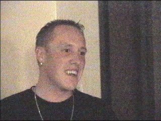
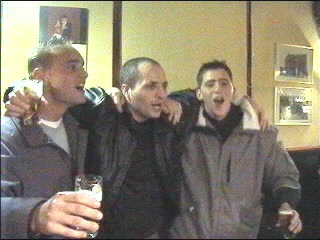

|
Dartstoernooi Fanproject 10-11-2001 |

Izz werd in de tweede ronde uitgeschakeld door K.

Cas eindigde op de 2e plaats.
Richard werd 3e.

Winnaar werd.....Roel.
Een "kixe ouwe" zorgde voor entertainment.

Het zangkoor bracht Roda-schlagers ten gehore.
Er kwam ook nog een accordeonman bij!

En toen werden er poefele gebakken.....
©KPD